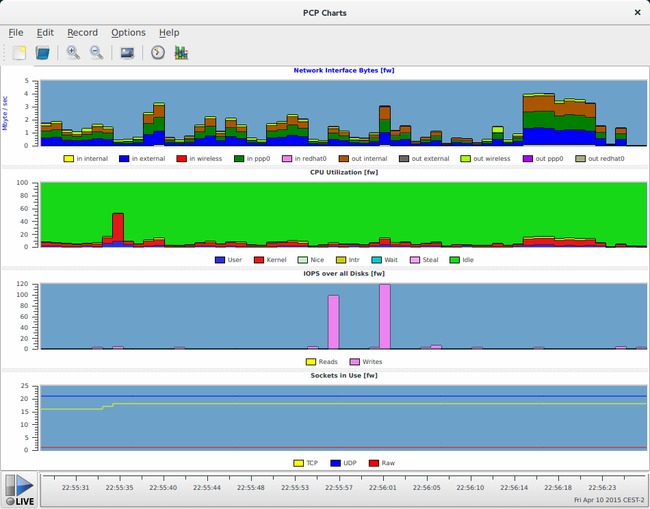

Performance Co-Pilot
A System Performance and Analysis Framework
Who in the audience has heard of or used Performance Co-Pilot?
What is Performance Co-Pilot?
- Framework for system-level performance analysis
- Collection, monitoring, and analysis of system metrics
- Uses a distributed architecture
- Provides a full API (C, Python, Perl)
- Easily extendible and flexible
Who uses PCP?
Netflix, Aconex,
University of Buffalo, XFS Developers,
MessageMedia, Red Hat,
...
Architecture
- pmcd - Performance Metrics Collector Daemon
- pmdas - Performance Metrics Domain Agents
- pmns - Performance Metrics Name Space
- Clients
Existing PMDAs
activemq, apache,
bonding, ds389,
gluster, postgresql,
papi, mysql,
postfix, named,
samba, linux,
linux_proc, elasticsearch,
json, systemtap,
...
Installation
On RHEL/Fedora based systems:
# yum install pcp pcp-webjs pcp-webapiOn Debian(*) based systems:
# apt-get install pcp pcp-webapiInstallation
# systemctl enable pmcd# systemctl start pmcd
# pcp
Performance Co-Pilot configuration on marquez.int.rhx:
platform: Linux marquez.int.rhx 4.0.0-0.rc6.git1.1.fc23.x86_64
hardware: 8 cpus, 4 disks, 1 node, 11742MB RAM
timezone: CEST-2
services: pmcd
pmcd: Version 3.10.3-1, 7 agents
pmda: root pmcd proc xfs linux mmv jbd2
Installation
Web interface needed?# yum install pcp-webapi pcp-webjs# systemctl enable pmwebd# systemctl start pmwebdUsage
pminfo
Displays information about performance metrics
# pminfo | head -n3
cgroup.blkio.all.io_merged.async
cgroup.blkio.all.io_merged.read
cgroup.blkio.all.io_merged.sync
# pminfo | wc -l
1618
pminfo
# pminfo -dtf mem.freemem
mem.freemem [free system memory metric from /proc/meminfo]
Data Type: 64-bit unsigned int InDom: PM_INDOM_NULL 0xffffff
Semantics: instant Units: Kbyte
value 340832
# pminfo -dtTf network.interface.in.bytes
network.interface.in.bytes [network recv read bytes from /proc/net/dev per network interface]
Data Type: 64-bit unsigned int InDom: 60.3 0xf000003
Semantics: counter Units: byte
Help:
bytes column on the "Receive" side of /proc/net/dev (stats->rx_bytes counter in
rtnl_link_stats64)
inst [3 or "lo"] value 1449301
inst [4 or "virbr0-nic"] value 0
inst [5 or "virbr0"] value 0
inst [6 or "vnet0"] value 9087033220
inst [7 or "em1"] value 9371300105
pmstore
PMDAs do not only pull information
PMDAs can also dynamically get data pushed to them
# pmstore hotproc.control.config 'fname = "java"'
pmval
# pmval mem.freemem
metric: mem.freemem
host: marquez.int.rhx
semantics: instantaneous value
units: Kbyte
samples: all
371924
371824
371824
371456
371392
All metrics are autocompleted when using bash-completion
Other CLI tools
Implementing your favourite monitoring tool is simple
For example: pmiostat
# Timestamp Device rrqm/s wrqm/s r/s w/s rkB/s wkB/s avgrq-sz avgqu-sz await r_await w_await %util
Mon Apr 27 21:59:44 2015 sda 0.0 0.0 0.0 0.0 0.0 0.0 0.00 0.00 0.0 0.0 0.0 0.0
Mon Apr 27 21:59:44 2015 sdb 0.0 0.0 0.0 0.0 0.0 0.0 0.00 0.00 0.0 0.0 0.0 0.0
Mon Apr 27 21:59:44 2015 sdc 0.0 0.0 0.0 0.0 0.0 0.0 0.00 0.00 0.0 0.0 0.0 0.0
Mon Apr 27 21:59:44 2015 sdd 0.0 0.0 0.0 15.0 0.0 119.9 8.00 0.11 7.1 0.0 7.1 1.1
Mon Apr 27 21:59:45 2015 sda 0.0 0.0 0.0 0.0 0.0 0.0 0.00 0.00 0.0 0.0 0.0 0.0
Mon Apr 27 21:59:45 2015 sdb 0.0 0.0 0.0 0.0 0.0 0.0 0.00 0.00 0.0 0.0 0.0 0.0
Mon Apr 27 21:59:45 2015 sdc 0.0 0.0 0.0 0.0 0.0 0.0 0.00 0.00 0.0 0.0 0.0 0.0
Mon Apr 27 21:59:45 2015 sdd 0.0 0.0 0.0 2.0 0.0 51.8 26.00 0.01 3.0 0.0 3.0 0.3
pmchart
Historical Data
Collect data over time via the pmlogger service.
# systemctl enable pmlogger
# systemctl start pmlogger
Configuration in /etc/pcp/pmlogger. Default collection interval is 1 minute.
Archives end up in /var/log/pcp/pmlogger/`hostname`.
Historical Data
Most tools can work with archive files directly via the -a <archive_file> option.
# pmval -a /var/log/pcp/pmlogger/root.acksyn.org/20150409 \
mem.freemem -S "Apr 09 02:00" -T "Apr 09 03:00" -t20min
metric: mem.freemem
archive: /var/log/pcp/pmlogger/root.acksyn.org/20150409
host: root.acksyn.org
start: Thu Apr 9 02:00:00 2015
end: Thu Apr 9 03:00:00 2015
semantics: instantaneous value
units: Kbyte
samples: 4
interval: 600.00 sec
02:00:00.000 179540
02:20:00.000 173756
02:40:00.000 184852
03:00:00.000 186352
Historical Data
pmdiff can be used to find metrics that changed by a certain factor in one or two archives.
# /usr/bin/pmdiff -q 50 \
/var/log/pcp/pmlogger/root.acksyn.org/20150408 \
/var/log/pcp/pmlogger/root.acksyn.org/20150409
Ratio Threshold: > 50.00 or < 0.020
20150408 20150409 Ratio Metric-Instance
start-end start-end
0.001 0.107 >100 disk.partitions.blkread ["md125"]
0.001 0.107 >100 disk.partitions.blkread ["dm-8"]
0.001 0.087 87.00 disk.partitions.blkread ["sda3"]
0.014 0.000 |-| disk.partitions.blkread ["dm-3"]
0.002 0.000 |-| disk.partitions.read ["dm-3"]
0.001 0.000 |-| kernel.percpu.interrupts.PMI ["cpu1"]
0.000 0.186 |+| kernel.all.nusers
0.000 0.019 |+| disk.partitions.blkread ["sdb3"]
0.000 0.013 |+| disk.partitions.read ["md125"]
0.000 0.013 |+| disk.partitions.read ["dm-8"]
0.000 0.004 |+| disk.partitions.read ["sda3"]
0.000 0.003 |+| disk.partitions.blkread ["sdb1"]
0.000 0.003 |+| disk.partitions.blkread ["dm-2"]
Historical Data
There are many more tools that can be used with archives (beyond the live tools):
- pmlogextract - reduce, extract, concatenate and merge archives
- pmlogsummary - calculate averages of metrics and output summary
- Convert from and to other metric formats: collectl2pcp, iostat2pcp, mrtg2pcp, sar2pcp, ganglia2pcp, pcp2graphite
- pcp2pdf can be used to create a formatted PDF report out of an archive
Analyze Data
Import an archive in [i]python and manipulate the data via pandas.
git clone https://github.com/mbaldessari/pcpinteractive.git
cd pcpinteractive
$ ipython qtconsole --pylab=inline
In [1]: import pcparchive, pandas
In [2]: p = pcparchive.PcpArchive('testfiles/monday')
In [3]: p.parse()
Parsing archive: [########## 100.0%]
In [4]: metrics = p.get_metrics()
In [5]: len(metrics)
Out[6]: 253
Analyze Data
In [9]: net_in = p.get_pandas('network.interface.in.bytes')
In [10]: net_in.plot()

Performance Metrics Inference Engine
- An inference engine that can evaluate rules and generate alarms or automate system management tasks
- Rules have actions attached to them. (e.g. generate an alarm, create a log entry, run a script)
- Works against live PMCD or Archives
Performance Metrics Inference Engine
# systemctl enable pmie
# systemctl start pmie
If the number of IP packets received is more than 10 per second, send an email /etc/pcp/pmie/config.default:
Delta = 1sec;
network.ip.inreceives > 10 count/sec -> shell \
"echo foo | mail -s 'nomoreyoutube' icanthazcats@acksyn.org";
man pmie
Containers
Use the --container option to specify if a metric is to be fetched from a container.
There is no need to install any PCP components inside the container.
# pminfo --fetch containers.name containers.state.running
containers.name
inst [0 or "f4d3b90bea15..."] value "sharp_feynman"
inst [1 or "d43eda0a7e7d..."] value "cranky_colden"
containers.state.running
inst [0 or "f4d3b90bea15..."] value 1
inst [1 or "d43eda0a7e7d..."] value 0
# pmprobe -I network.interface.up
network.interface.up 5 "p2p1" "wlp2s0" "lo" "docker0" "veth2"
# pmprobe -I --container sharp_feynman network.interface.up
network.interface.up 2 "lo" "eth0"
Other
Grafana

JSON interface

Blinkenlights ;)

Vector


Cockpit